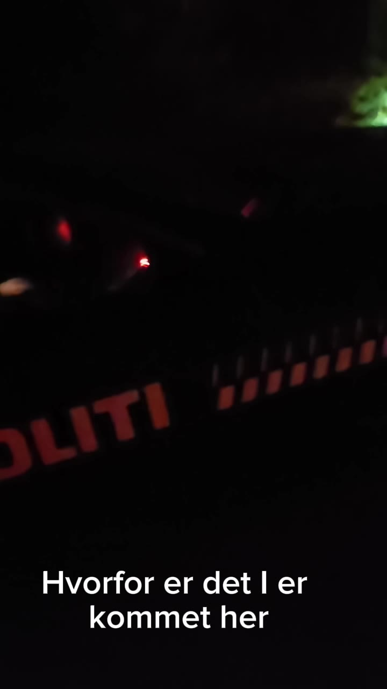
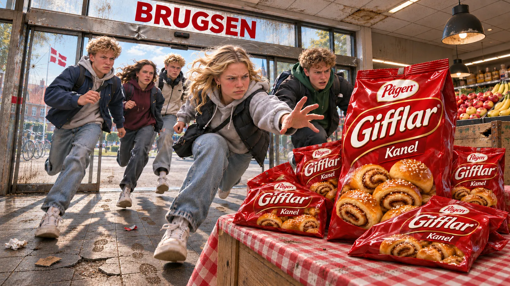
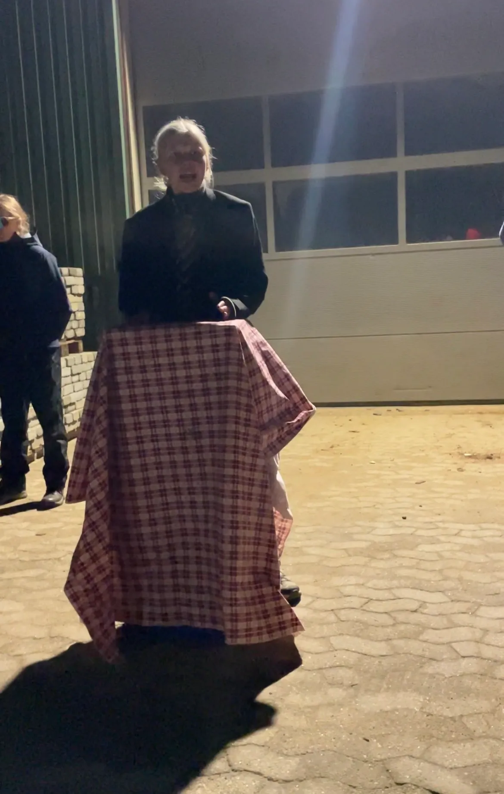
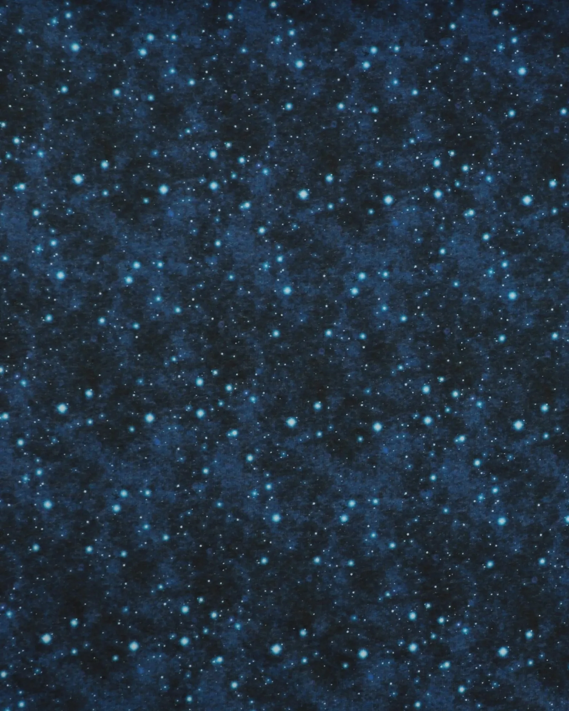
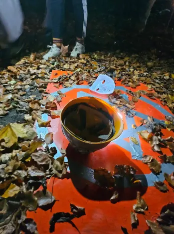

Log ind
“Håb, drømme og gaffatape”
Forside
Om redaktionen
LIVE
Udsolgt på gaffatape
Udsolgt på gaffatape
Udsolgt på gaffatape
Udsolgt på gaffatape
JEM&FIX
JEM&FIX
JEM&FIX
Donald trump har nye planer og det går ud over Aarhus ø
Donald
trump
Donald trump
har
nye
planer
har nye planer
og
det
går
ud
og det går ud
over
Aarhus
ø
over Aarhus ø
Håb, drømme og manglende gaffatape
Håb,
drømme
Håb, drømme
og
manglende
og manglende
gaffatape
gaffatape
Uventet møde med politiet
Uventet
møde
Uventet møde
med
politiet
med politiet

Teenagere vælter brugsen i hjortshøj
Teenagere
Teenagere
vælter
brugsen
vælter brugsen
i
hjortshøj
i hjortshøj

Er FDF imod lactoseintolerante?
Er
FDF
Er FDF
imod
imod
lactoseintolerante?
lactoseintolerante?
kan ai Sige op?
kan ai Sige op?
kan ai Sige op?
kan ai Sige op?
Emma Sofie på 17 bliver påkørt!!
Emma
Sofie
Emma Sofie
på
på
17
bliver
17 bliver
påkørt!!
påkørt!!
Biler kan nu køre på tis
Biler
Biler
kan
nu
kan nu
køre
på
køre på
tis
tis
"Hvor er AI?"
"Hvor er AI?"
"Hvor er AI?"
"Hvor er AI?"
AI siger op?!
AI
AI
siger
siger
op?!
op?!
Pige i chok efter påkørsel! Pige påkørt af tisse skrigende bil
Pige i chok efter påkørsel! Pige påkørt af tisse skrigende bil
Pige i chok efter påkørsel! Pige påkørt af tisse skrigende bil
Pige i chok efter påkørsel! Pige påkørt af tisse skrigende bil
Jule kryds & tværs
Jule
kryds
Jule kryds
&
tværs
& tværs
Ny hver dag!!!
En sej gåde!!
En
sej
En sej
gåde!!
gåde!!
67 år
67 år
67 år
67 år
Ingen moderne teknologi hvis man er under 67 år
Ingen
moderne
Ingen moderne
teknologi
teknologi
hvis
man
er
hvis man er
under
67
år
under 67 år

Læs om din fremtid
Læs
om
Læs om
din
din
fremtid
fremtid

Mystiske masker og den forsvundene gafffatape
Mystiske
Mystiske
masker
og
den
masker og den
forsvundene
forsvundene
gafffatape
gafffatape

naughty-bots